Code Security: Docket inside Henoyo
A review of the Docket console, and one integrated Henoyo experience to replace it. Built overnight, 19 October 2026. Round 2 (policy builder and posture map) added the same day.
make demo-console, then http://127.0.0.1:8765 (it was left running). The approved HTML mockups are docs/ui/mockup/index.html (round 1), posture.html and policies.html (round 2). The round 2 spec is docs/ui/policy-and-posture.md. Everything is on branch feat/henoyo-console. Every number you will see is sample data, labelled as such on every screen.Round 2: policy builder and posture map
Your brief had three parts. Each is now a screen you can click through, on the same sample data.
| Your brief | What was built |
|---|---|
| A visual policy per application category, with scanners from any vendor and regulatory guidelines | Policies tab. One policy per kind of application (Banking customer-facing, Internal, Non-banking web and API), chosen by category, exposure, stack and tier. The policy is drawn as a flow, left to right: how a run starts, the scanners before the agents (each step has a vendor picker), the Docket agents, the guidelines that advise (RBI, SEBI, OWASP and others), the gate, and the outcome. You build it in the same screen: who it applies to, cadence, steps, guidelines. "If you save" lists which applications it matches and which would gain or lose a current check, before anything is written. |
| A run shown as evidence | Under the flow, pick an application. Preview a run shows the plan for each step: the command, what it reads, what it produces, who wrote the detection. It never shows invented results. Last run shows the same flow with the real state, count and duration of each step from that application's latest scan. |
| A portfolio dashboard with a magic-quadrant two-by-two, readable in 15 seconds, clickable, showing evolution | Home is now the posture map. A headline sentence, six numbers, then the map. Across is "Required checks" (overdue to current); up is "Proven problems" (some open to none open). Click a dot to open the application. "Show movement" draws each dot's trail; five snapshots (weekly) are shown as five small maps, so "getting better or worse" reads without scrubbing. Beside it: "Look here first" and "Clearest right now". Below: required checks current by category, and assessments by week. |
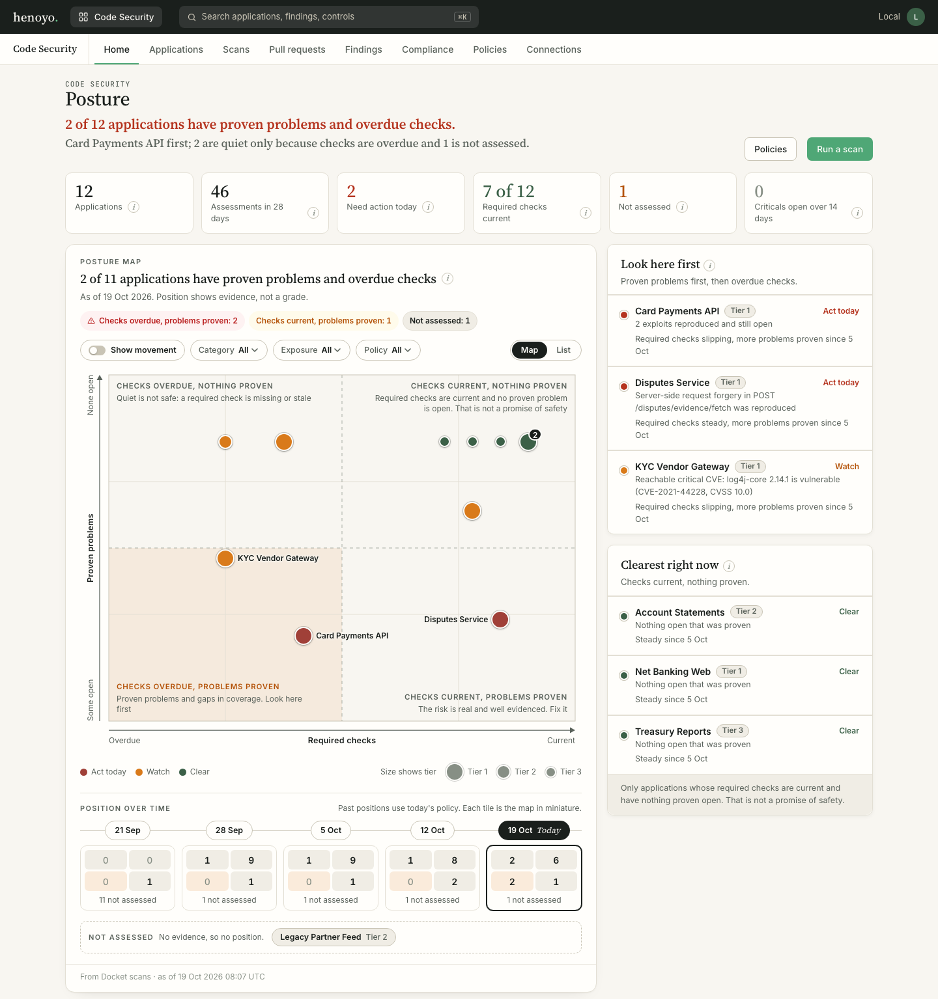
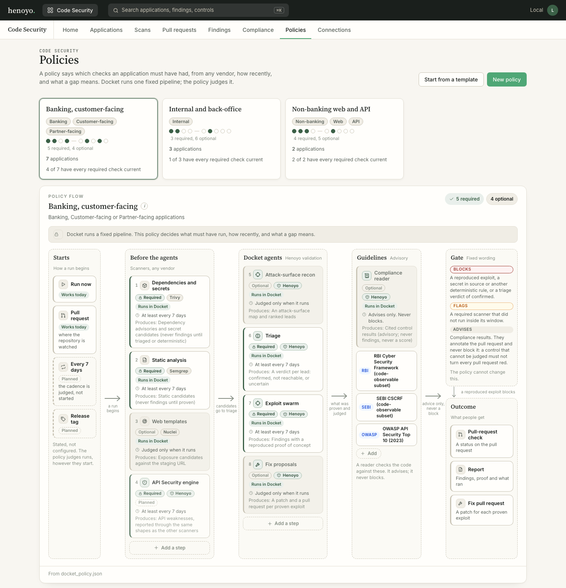
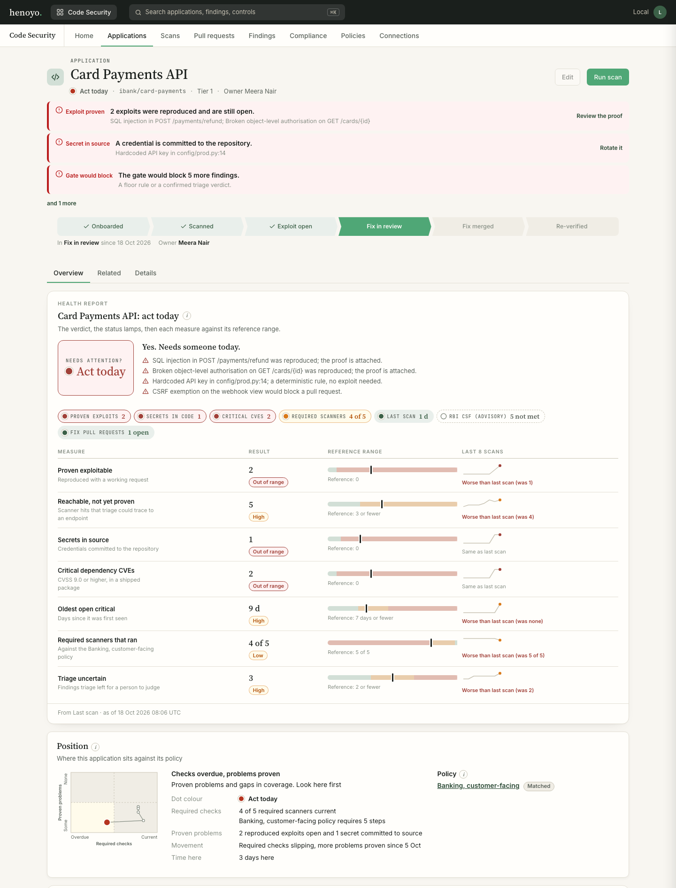
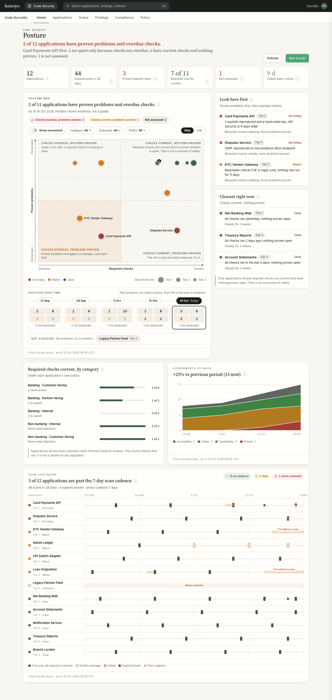
mockup/posture.html), top of page. The console matches it.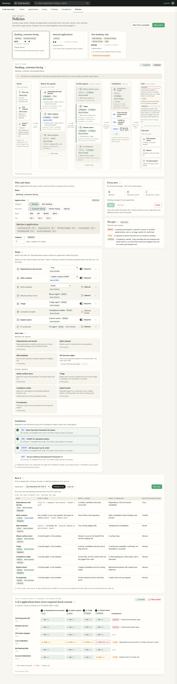
mockup/policies.html), top of page.How to read the map. A dot's quadrant is decided by rule, not by a score. It is on the right if every required step has finished inside its window. It is on the bottom if a proven problem is open: a reproduced exploit, a secret found by a deterministic rule, or a triage verdict of confirmed. The number only places the dot inside its quadrant. There is no composite score and no percentage on a dot. The quadrant titles never claim safety: the top right reads "Checks current, nothing proven", with "That is not a promise of safety" beneath it.
The short version (round 1)
Docket becomes a Henoyo application called Code Security: the Henoyo shell, Henoyo's tokens and type, and Henoyo's own Visual Kit components, so it can sit beside IRM and RBVM without looking like a separate product. A security lead opens it and the first screen says, in one sentence, what needs them (round 2 made that screen the posture map, above). Each application then has a health report, a scan pipeline drawn as a Gantt chart, and a policy that says what must run.
What you asked for in round 1, and where it landed
| Your note | What was built |
|---|---|
| 1. Missing process visualization | Scan pipeline Gantt (docket-pipeline): one lane per scanner or agent, bar from start to end, grouped "before the agents" and "Docket agents", exploit specialists nested under the swarm. On every application and scan page. A portfolio-wide scan continuum on Home shows every scan of every application on one time axis, with the gaps where the cadence was broken. |
| 2. Multiple scans; missing Henoyo ones; no indicator of whose they are | Every lane and every policy step carries a chip: Henoyo (verdant) or the tool's name (grey: Trivy, Semgrep, Nuclei). The Henoyo API Security engine is a lane and a policy step; it shows "Not run" when the policy requires it and it did not run. Home has a "Required scanners, this week" card that answers the same question for the whole portfolio. |
| 3. Repo health card, validated issues, timeline | Health report (docket-health-card), three registers: a caution plate that answers "needs attention?" in a word, status lamps, and a lab-report table with each measure against its reference range, a flag in words, an 8-scan sparkline and "worse/better than last scan". Issues carry a Proof column: reproduced, deterministic, candidate, not reachable. |
| 4. Needs a code security policy: number of scanners, sequence, regulatory and security requirements | Policy page: the full sequence that runs (9 steps), each Required or Optional, each with the security rule and/or regulation behind it, its cadence and what happens if it fails; regulatory and security requirement cards; a "what the policy does about it" list (blocks / flags / advises); and Policy against reality, a matrix of applications by required scanner with the consequence of each row. |
| 5. Add regulatory citation to the compliance baseline | Every control shows its citation as authority, instrument and section, a "Clause: not mapped" marker unless the pack supplies a clause, a source link, and a link to the Henoyo obligation it should resolve to. See "What is not done" for why clause numbers are not filled in. |
| "Where does it sit in the Gantt scheme? Do I need to worry?" | The application page has a lifecycle path (Onboarded, Scanned, Exploit open, Fix in review, Fix merged, Re-verified), the pipeline of its latest scan, its place on the continuum, and the caution plate: Act today / Watch / Clear / Unknown. |
Review of today's Docket console
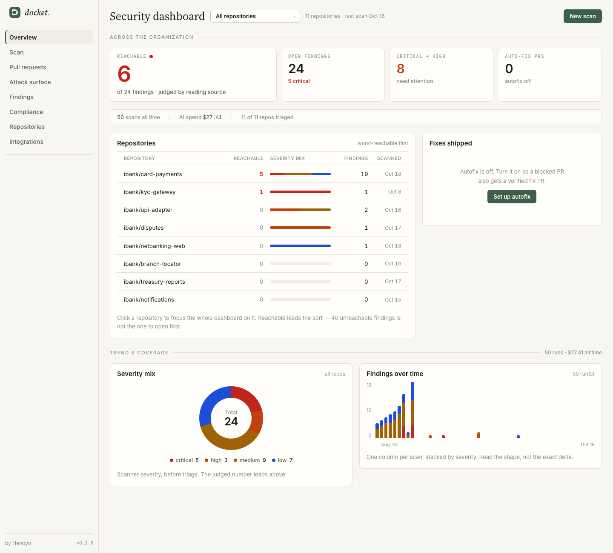
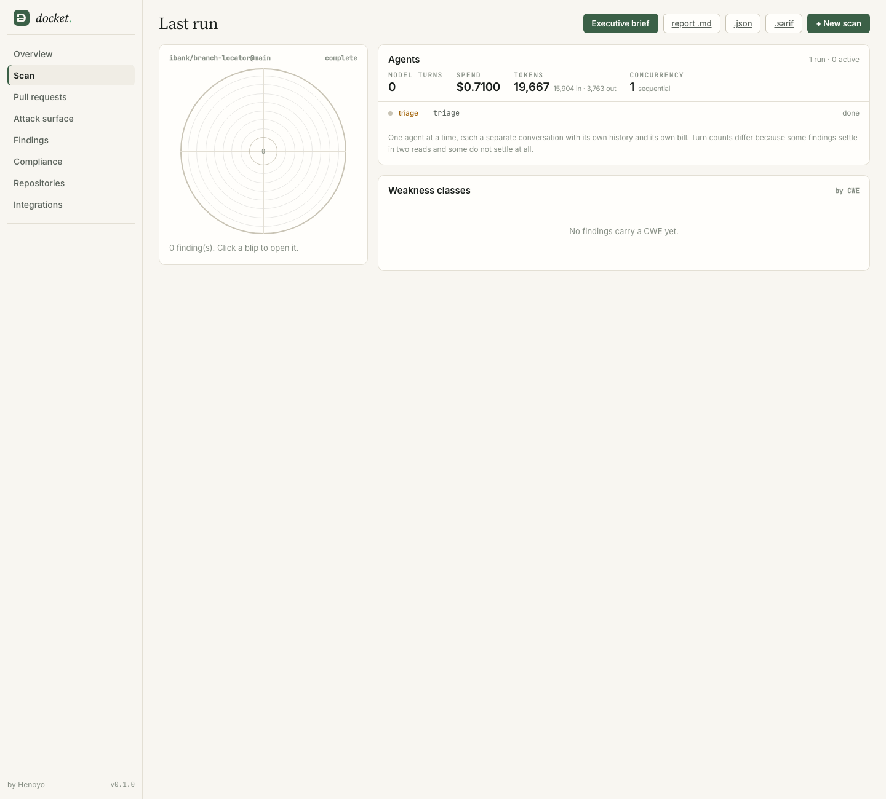
Keep. The honesty is good and is carried over untouched: the headline is the reachable count, not scanner volume; findings are judged by reading source; compliance says "not answerable from code" instead of guessing; the PR watcher, autofix and the repository connection all work and are still there (under Pull requests and Connections).
What does not work for a busy security professional:
- It stands alone. Its own "docket." rail, tokens hand-copied from a BRAND.md, no app switcher, search or tabs. It cannot sit next to IRM or RBVM.
- It is organised around repositories, not applications under a policy. There are no tiers, owners or cadence, so it cannot answer "is anything overdue?" or "has this application been checked by everything it should be?".
- The process is a radar of stage states. No order, no duration, no sense of who built each tool. Underneath,
report.jsonrecorded only the state of each stage, never when it ran; that is fixed. - No Henoyo-versus-third-party distinction, and Henoyo's own API Security engine is invisible.
- No policy. Scanners are chosen per scan in a form; nothing states what is required, in what order, or why.
- Compliance opens on an empty state until a pack is chosen, and a citation is a single string.
- Hygiene. It fetched Google Fonts and GitHub avatars at render time (against Docket's own no-incidental-outbound-calls rule), and no table sorts (a Henoyo rule).
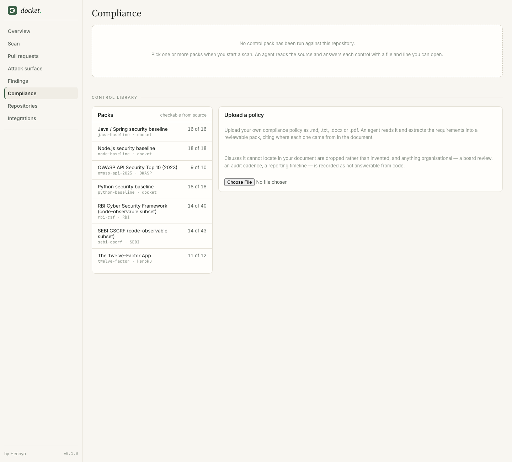
The proposal
Four principles
- One application, one record. The page is a Henoyo record page: banner, status path, kit components, related lists.
- Proof first. A reproduced exploit is a different kind of thing from a scanner hit and is drawn differently everywhere. Candidates are never counted as findings.
- Show the process, and whose it is. Order, duration, origin, and what the policy required.
- The policy is the yardstick. One definition of "required scanner" drives the pipeline caption, the health measure, the matrix and the coverage of each scan.
Tabs
| Tab | Question it answers |
|---|---|
| Home | Where does every application sit, who needs me first, and is it getting better or worse? (the posture map) |
| Applications | Every application, worst first. Open one for its health report and pipeline. |
| Scans | What ran, when, with what coverage and result. |
| Pull requests | The PR gate and watcher (existing, restyled). |
| Findings | Proven exploitable, reachable but unproven, secrets, everything open. Click a row for the proof. |
| Compliance | What the code says about each written requirement, with its citation. No score, ever. |
| Policies | What must run for each kind of application, from which vendor, and what a gap means. Build one, see who it affects, preview a run, then compare policy against reality. |
| Connections | Repositories and integrations (existing, restyled). |
The application page
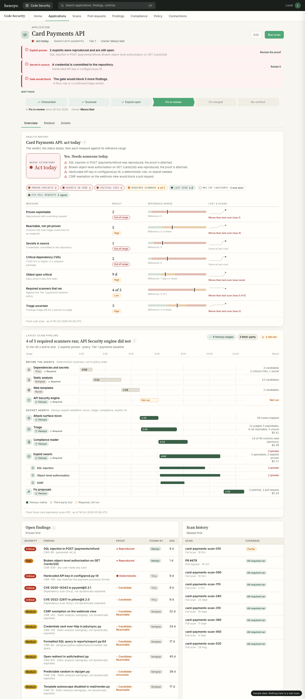
- Health report borrows from places that solved "tell me fast": the avionics caution plate (one word, one sentence, the reasons), a strip of status lamps, and the lab report (value, reference range, flag in words, trend). Colour never carries meaning alone.
- Pipeline is the Gantt. Verdant bars are Henoyo-built, grey bars are third-party tools, a dashed amber bar is a required scanner that did not run, in the slot it should have filled. Click a bar for the stage.
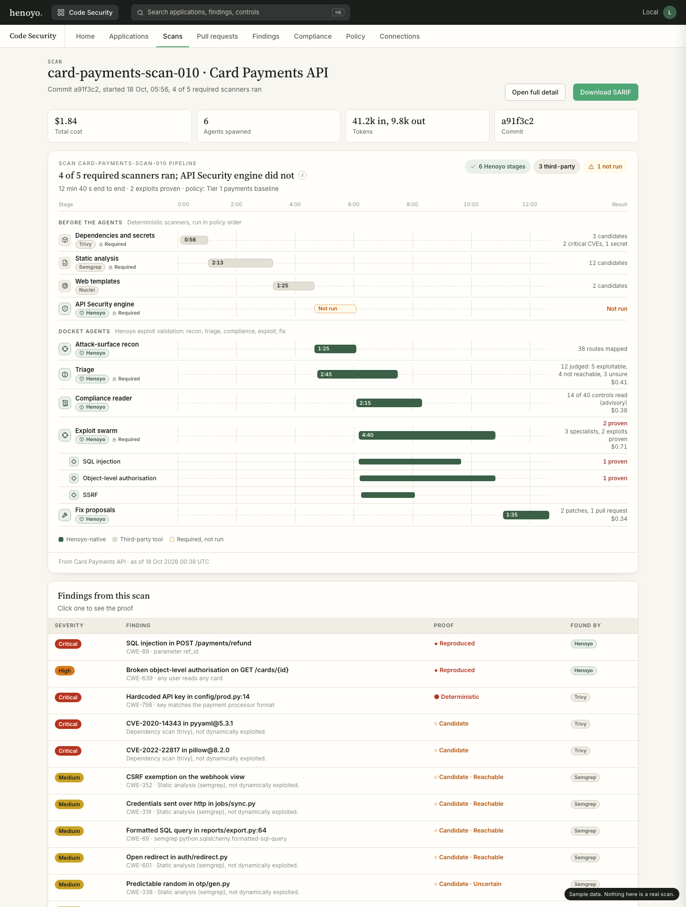
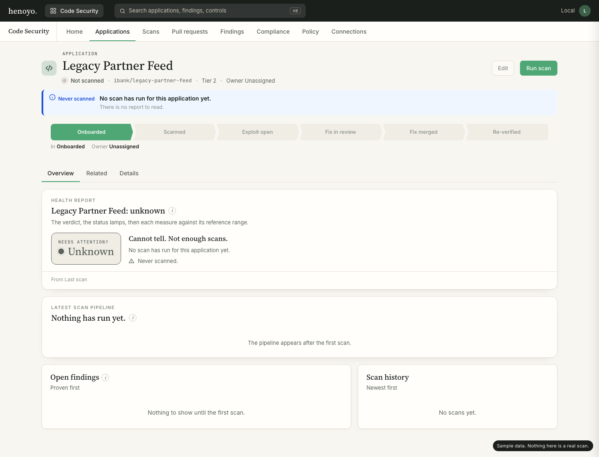
Policy and compliance
Round 1 had one read-only Policy page (the sequence, requirements, what blocks, policy against reality). Round 2 replaced it with the Policies tab shown above; the matrix, the gate wording and the requirement cards moved into it.
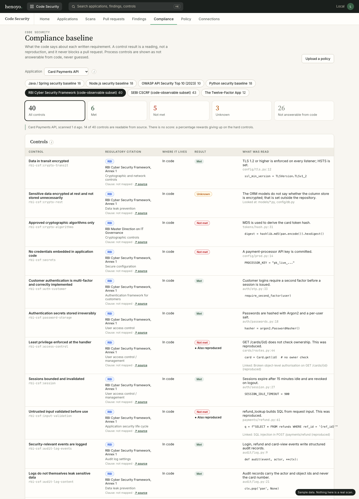
How it fits Henoyo
| Code Security | Henoyo (security spine, sec__) | Gap |
|---|---|---|
| Application | sec__application (repository_url, production_url, criticality) | No separate Repository object; the repo is a text field. |
| Finding | sec__finding with assessment_type pentest / api_dynamic / code_review / software_composition / secret_scan | None. |
| Proof (request, response) | sec__evidence (content hash, captured_at) | The spine has no per-finding proof field; "proven vs unproven" needs a relation to evidence. |
| A scan run | sec__assessment (kind, cadence, regulator_mandated) | None. |
| Policy | No scan-policy object exists. Nearest: IRM exception_policy, RBVM routing rules. | New object needed (policy and its steps). |
| Regulatory citation | sec__framework, control_requirement, obligation (clause_reference) | Docket packs cite a section; clause numbers must come from these records. |
| Compliance result | sec__control, control_mapping (coverage_level) | Docket's results are advisory readings, a separate list by design. |
UI controls: what was reused, what is new
Reused from Henoyo's Visual Kit (not yet in Core v3: branch integ/visual-kit-review, 473 commits ahead of release/v3, pinned at c2a3ba4f): record banner, status path, ring, severity-by-age heatmap, discovery trend, plus the shared frame (eyebrow, finding as title, help "i", source and as-of footer), the three colour schemes and the density tokens. About 30 kit elements are bundled; the console uses these now and can adopt the rest (evidence ledger, record timeline, deadline clock, stepper, risk ledger, exposure tree, blast radius) as features arrive.
New, written in the kit's style (extend HenoyoElement, read the same tokens, emit composed events) and ready to propose into Core: docket-pipeline, docket-health-card, docket-continuum, docket-policy-matrix, and in round 2 docket-quadrant (the posture map: dots sized by tier, trails, a time scrubber, quadrant counts per snapshot, clusters where dots share a coordinate) and docket-policy-flow (the policy drawn left to right, in design mode where stations open the builder, or run mode where they show the last run's evidence).
New screens in the console (round 2): Home became Posture (Home.tsx), the old Policy page was replaced by Policies (PoliciesPage.tsx), and the application page gained a Position strip. All of it uses the same tokens and frame as round 1.
Local patches to the pinned kit (listed in app/kit/PIN.md, to propose upstream): ring finding and showPercent; record banner per-row word (its danger level was hard-coded to read "Overdue").
Searched for other unmerged UI: feature/list-view-redesign, dashboard-chart-redesign, lookup-field-redesign, layout-builder, ui-enhancements, reports-ui and setup-six-tabs are already contained in release/v3, so there was nothing extra to reuse. feat/ui-fixes (a light/dark theme) is one commit ahead; not used, because the Henoyo app is fixed-light. henoyo-design-worktrees holds only agy-design-review at main.
What the reviews changed
Round 1
The mockup was reviewed by Claude Opus (looking at the screenshots) and by Grok (reading the source). Both agreed on most points, and Grok found real contradictions. Applied:
- One definition of "required scanner". The policy said 4, the health card 3 of 4, and the pipeline 5 of 6. Now the policy lists the whole 9-step sequence, 5 steps are Required, and all three agree (4 of 5 ran).
- The policy no longer contradicts itself on what blocks. It had "a critical CVE blocks" on one row and "only proof blocks" on another. Now: blocks a reproduced exploit, a secret or other deterministic rule, a triage verdict of confirmed; flags a required scanner that did not run; advises compliance. A CVE goes to triage.
- Removed "Who found it" (findings by tool), which counted scanner candidates beside proven exploits. Replaced with "Required scanners, this week".
- The compliance reader is optional. Compliance never gates.
- Status lamps no longer disagree with the table, and the compliance lamp is dashed and advisory, never a fault light.
- Worded trend ("Worse than last scan") beside each sparkline; candidate counts never use the red range; "Triage uncertain" and "Unknown" used consistently.
- Every table sorts, as Henoyo requires; the 26 process controls open from their tile; the exploit step cites the RBI VAPT control rather than an unrelated SEBI one; and "Also reproduced" is no longer red, so it does not read as a second failure.
- A "consequence" column on the policy matrix, so a stale cell explains the banner.
Round 2
The spec was reviewed again by Grok and by Opus before the build. What they changed:
- A red application could land in the "sound" quadrant. Position had been a blend of two numbers. Now the quadrant is decided by rule from the same facts the health card uses, and the number only places the dot inside it.
- Running the exploit lane less made an application look better. A later static-only scan did not list an earlier reproduced exploit, so it vanished. Proven items now persist from the latest run in which the exploit lane ran, and the screen says "as of" that run.
- An imported result could never count as "ran". The SARIF path recorded no stage, a clean file fell through to running Semgrep, and an unknown tool name (CodeQL) was credited to Docket. The SARIF path now records the static-analysis stage with the file's own tool name, version and time, so a stale file re-imported today does not look fresh.
- A policy judges; it does not configure. Docket runs one fixed pipeline. The builder has no reordering and no triggers, shows steps in the order Docket runs them, and says so in a banner. "Every N days" is what staleness is judged against, tagged Planned because Docket does not start scans itself.
- Candidates never move a dot. They are counted only in the weekly outcomes. An untriaged high or critical item shows as "needs a person to judge" and is never counted as clean or confirmed.
- Quadrant titles never claim safety ("Checks current, nothing proven", with a note that it is not a promise of safety).
- "Adherence" became "Required checks current", and the explanation says it counts checks that ran, not a verdict on any regulation.
- Unassessed applications are not plotted. They sit in a tray, never at the best position.
- "Steadiest" became "Clearest right now": only applications with current checks and nothing open, never padded to three.
- The button says Save, not "Save and apply". Saving writes the policy file and starts nothing. Approval is not editable until an audit trail exists.
- Replay is honest. Past positions are computed against today's policy and profile, and the screen says "Past positions use today's policy."
- Policy assignment fails closed. A pinned policy wins and is flagged if the profile would have matched another. Otherwise the most specific match wins, then the default. An application whose profile lacks a field a policy constrains is marked incomplete and the health card says so. Two equally specific policies for the same application are refused on save.
- Policy floor warnings. A policy for customer-facing applications must require Trivy, Semgrep and triage (banking also the exploit swarm), or the builder, the preview and the library warn "Thinner than the baseline". This stops a policy author raising every dot by requiring less. It warns; it does not block.
What is real, and what is not
Real: new engine/docket/portfolio/ (health levels, analytes, pipeline lanes, policy and coverage), five new endpoints, stage timings now recorded in report.json, citation parts on compliance controls, a deterministic demo seeder (python -m docket.demo.console), the React views, the kit bundle, vendored fonts (no outbound request at render), and tests/test_portfolio.py (it asserts, among other things, that no response contains the word "compliant" or a percent or score key). make test-fast passes.
Real, round 2: policy save, delete and preview work and write docket_policy.json (atomically, patching the raw entry so other policies survive; preview has no side effects). Docket ingests SARIF from any tool for the static-analysis slot, one file per scan, and counts it as that step having run. The posture map, its rules, the history replay, assignment and floor warnings are computed on the server (portfolio/posture.py, portfolio/policy_write.py); the screens only draw them.
Sample: all the data in the demo. The 12 applications, scans, findings, proofs and control results are generated and labelled sample.
What is not done
- Docket does not start scans by schedule or on release. The cadence is judged, not started. Run now and pull-request checks work; "Every N days" and "Release tag" are tagged Planned.
- Vendor connectors beyond SARIF are not built. Snyk, Grype and ZAP are planned and shown disabled in the palette. Only static analysis imports (one SARIF file per scan).
- History replays today's policy. Policies have no version history, so past positions are not what the policy said then.
- No audit trail or approvals on policy changes; no clause mapping; no Core pack integration. A step that is judged but not run by Docket (the schedule) stays "judged, not started".
- It is not inside Henoyo Core yet. It is a standalone console in Henoyo's design language with Henoyo's components. Becoming a Core pack (objects and layout components) is the next step, and depends on the Visual Kit reaching v3.
- The API Security engine is modelled, not wired (still true in round 2: planned in the palette). Docket does not run it, so a policy that requires it shows "Not run" for every real application until it reports a stage. The built-in default policy requires Trivy and Semgrep only.
- Stage timings exist only for scans run after this change. Older reports show "No timing recorded" rather than a bar.
- No clause numbers. The RBI and SEBI packs cite sections, not numbered clauses, and I did not invent any. The data model accepts
clauseandobligation_ref; someone with the circulars has to fill them in, ideally once, in Henoyo's obligation records. - Read-only application list. Applications come from
docket_portfolio.json; Edit and Add are not wired. The masthead search is decorative. - Not exercised by me in a browser: drawers, sorting, filter tiles, pack tabs, upload and delete. The agents that built them tested them lightly. I checked every route by screenshot against real data.
make checkreports threeapp.backend.*modules failing here becausefastapi(an optional extra) is not installed; that is unrelated to this change. The other 97 pass.
Decisions for you
- Standalone or Core pack? Keep this console as the Docket front end until the Visual Kit is in v3, or start the Core pack now on the kit branch?
- Where does policy live? A new Henoyo object (the spine has none), or a JSON file Docket owns?
- Who owns clause mapping? The citations are honest but section-level. The spine's obligation records are the right home for clause numbers.
- Wire the API Security engine into a Docket run so the Henoyo-native lane is real rather than modelled?
- Upstream the six Docket elements and the kit patches into Core's Visual Kit?
- Should policies compose or stay one per application? Today the most specific matching policy wins. Composing (a baseline plus a banking layer) is more flexible and harder to read.
- Who owns the baseline floor? The "Thinner than the baseline" warning is hard-coded. Someone has to decide whether it is a Docket default, an organisation setting, or a regulator-derived rule.
- Do we invest in vendor connectors beyond SARIF? Snyk, Grype and ZAP would need API pulls, credentials and per-vendor mapping. SARIF already covers any tool that exports it.
- Where does policy approval live? Approval needs an audit trail and an approver. Henoyo workflows may be the place, which ties to the Core-pack decision.
Run it
make demo-console # builds the kit and the console, seeds ./.docket-demo, serves http://127.0.0.1:8765
# Home = posture map, Policies tab = builder
make console-kit # only after editing app/kit
make test-fast # includes tests/test_portfolio.py
open docs/ui/mockup/index.html # round 1 mockup
open docs/ui/mockup/posture.html # round 2: posture map
open docs/ui/mockup/policies.html # round 2: policy builder